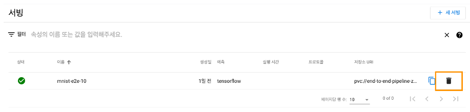

Step 1. 서빙 만들기
1. 러닝스튜디오 대시보드 접속합니다.
2. 좌측에 메뉴에서 학습관리 → 서빙 관리 탭을 선택입니다.
3. 우측 상단에 위치한 “새 서빙 클릭
4.서빙 생성
1) 서빙 생성 시 직접 YAML 스크립트 코드 복사/붙여넣기 → 실행
- name(이름) : 서빙 이름
- spec/predictor/tensorflow : 예측 모델
- StorageURL(모델 저장소) : PVC, Minio 스토리지 주소 적용 가능
5.서빙 상세 정보
- 상태, 외부URL, 내부URL, 스토리지URL, 예측 모델
Step 2. 서빙 삭제
1. 러닝스튜디오 대시보드 접속합니다.
2. 좌측에 메뉴에서 파이프라인 → 텐서보드 탭을 선택입니다.
3. 서빙 삭제
1) 리스트에서 삭제
- 삭제할 서빙 목록 -> "휴지통" 아이콘

1) 상세 목록에서 삭제
- 삭제할 서빙 상세 보기
- 우측 상단에 -> "삭제" 아이콘
Step 3. 서빙 호출
- 가이드 방향 나오실에 작성하기